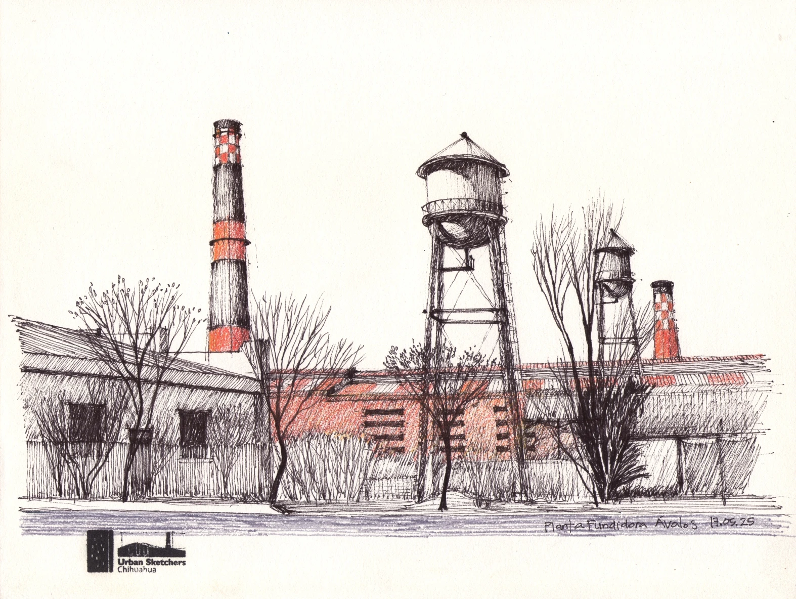

Nacido en Chihuahua en 1962, arquitecto de formación desde 1984. Tarín desarrolló desde la infancia un vínculo profundo con el dibujo, marcado por la experiencia de crecer en un rancho del desierto.
A lo largo de su trayectoria, ha construido una mirada sensible y precisa sobre el espacio y la línea, que transita desde las perspectivas arquitectónicas de sus primeros años hasta el croquis de viajero y su activa participación en Urban Sketchers Chihuahua. Con el tiempo, la pintura se consolidó como un medio para profundizar su exploración artística.
Actualmente, su obra se articula en dos líneas principales: paisajes bucólicos que evocan la memoria de la infancia y paisajes urbanos que dialogan con su experiencia profesional como arquitecto y con los espacios que habitan su recuerdo. En su práctica, el croquis no es solo un ejercicio técnico, sino un lenguaje esencial que da forma, evoca y construye el alma de la obra.
Su trabajo se sostiene en la observación atenta, la memoria y la relación inseparable entre arte y vida. Actualmente, su obra se exhibe en Bratislava, Eslovaquia, y en Viena, Austria.

{kind=link}
{kind=link}
{kind=link}
{kind=link}
{kind=link}